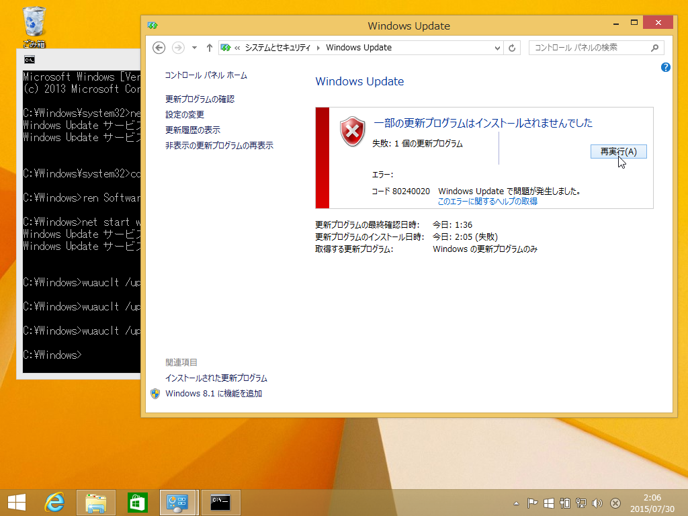

エラー 80070057 および 80240020 が発生して Windows 10 へアップグレードできない
執筆日時：

以前のエントリの応用で直せる……はず（知らんけど
管理者権限で cmd を起動。
C:Windows\System32>net stop wuauserv Windows Update サービスを停止中です. Windows Update サービスは正常に停止されました。C:Windows\System32>cd %systemroot%
C:Windows>ren SoftwareDistribution SoftwareDistribution.old （C:Windows>rd /s SoftwareDistribution\Download）
C:Windows>net start wuauserv Windows Update サービスを開始します. Windows Update サービスは正常に開始されました。
C:Windows><b>wuauclt /updatenow
これで Windows Update を開けば、Windows 10 のダウンロードが再び始まるので、次はちゃんと成功するように祈る。

なお、例では ren で SoftwareDistribution をリネームしていますが、 rd で消してしまってもいい気がする（ほんとは SoftwareDistribution\Download だけ消せばいいらしい。これならエクスプローラーからでも削除できる。失敗する場合は wuauserv を一度止める）。wuauclt /updatenow は何回か叩かないと動かなかった。
結果

これで 80070057 は消えましたが、80240020 はダメだった／(＾o＾)＼
結局
何回かやれば行けるッぽいのだけど、メディア作成ツールでインストールメディアを作成してアップグレードするのが早いです（ぁ
実はこれでも一度失敗したのですが、更新プログラムのダウンロードを無効にして再トライするとイケました。